The Y-parameters of a multi-port component defined by its S-parameters required for a small signal AC analysis can be obtained by converting the S-parameters into Y-parameters.
In order to extend a 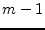-port to have a S-parameter device with
 ports assuming that the original reference port had a reflection
coefficient 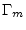 the new S-parameters are according to
T. O. Grosch and L. A. Carpenter [12]:
ports assuming that the original reference port had a reflection
coefficient 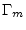 the new S-parameters are according to
T. O. Grosch and L. A. Carpenter [12]:
| 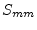 | 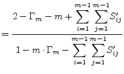 | (9.227) | |
| 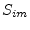 | 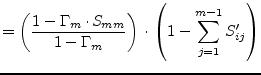 | 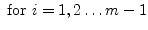 | (9.228) |
| 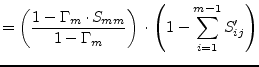 | 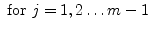 | (9.229) | |
| 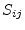 | 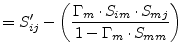 | 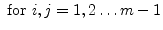 | (9.230) |
If the reference port has been ground potential, then
simply folds to -1. The reverse transformation by connecting a
termination with a reflection coefficient of to the  th
port writes as follows.
th
port writes as follows.
| 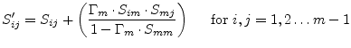 | (9.231) |
With the S-parameter transformation done the  -port noise wave
correlation matrix is
-port noise wave
correlation matrix is
| 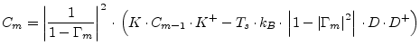 | (9.232) |
with
| 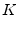 | 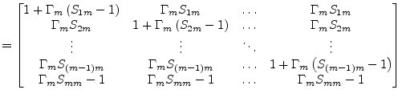 | (9.233) |
| 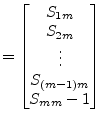 | (9.234) |
whence 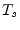 denotes the equivalent noise temperature of the original reference port and the 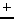 operator indicates the transposed conjugate matrix (also called adjoint or adjugate).
The reverse transformation can be written as
| 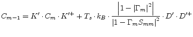 | (9.235) |
with
| 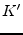 | 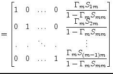 | (9.236) |
| 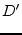 | 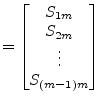 | (9.237) |